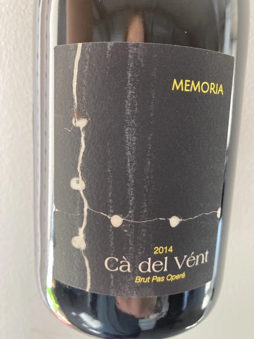

- Type
- White Sparkling, Brut
- Producer
- Cà del Vént
- Vintage
- 2014
- Disgorged in
- ~2018-2019
- Spent on lees
- 44 months
- Location
- Italy, Vino (IT)
- Grapes
- Chardonnay, Pinot Noir
- Alcohol
- 12.5
- Sugar
- NA
- Price
- 1412 UAH, 1518 UAH, 1650 UAH, 1790 UAH
- Cellar
- N/A
Producer
Cà del Vént has a humble story that officially started in 1994. With no equipment, just in the garage, they handcrafted 5 barrels of Clavis, red wine from autochthonous varieties. It was made just for personal consumption. As they admitted, likely due more to luck than actual ability, their first wine, Clavis 1996, turned out to be incredible.
Only in 2001 did they buy a small pneumatic press to vinify the first 2000 bottles of Franciacorta. Yet they didn’t like the result as the wine lacked elegance and the oak flavours were too obvious and heavy.
After gaining experience, the property reaches 6.5 hectares merging some neighbouring vineyards. And so they move from an amateur to a small winery.
As you might know, to be allowed to write any designation like Franciacorta DOCG, you have to pass an evaluation by the tasting commission. In 2015 Cà del Vént was rejected because its wines did not suit the appellation standards. Formally commission said that these wines are too rich and complex. Since then Cà del Vént is not bound by any restrictions other than its own. High standards, and a strong identity made by the soil and the season.
Ratings
2020-12-18 - 8.00
Very cool traditional style sparkling that decided to drop Franciacorta DOCG from the label. Powerful and rich nose, with oxidative notes, apple tart, honey. Well balanced, but lacks freshness (just a tiny bit). I am very happy to witness great effort.
2021-08-17 - 8.25
Tasted as part of Divych Vechir.
Beautiful wine. Tasting again in almost a year and it become even better. Sea breeze, cream, dough, mildew (in a very good way), marzipan, baked apples, ginger. Sophisticated, expressive, delicious but friendly and approachable. I agree with people who say that it lacks acidity to achieve perfection. Definitely great alternative to Champagne, good QPR. Hope to taste other wines from this range.
2021-12-21 - 8.50
Constantly delivers. Wonderful table wine (!). Charming bouquet full of nuts, baked apples, soaked apples, honey, ginger, citrus and toast. Complex, and demanding. Well balanced, right volume, tasty with long and flavourful aftertaste. Definitely one of my favourite traditional sparkling wines. And great value, btw.
Tasted as part of Classy Bubbles event.
2022-08-06 - 8.25
As delicious as ever. Some say that it begins to fade away, but IMO it’s still alive and kicks. Multilayered, intense and complex. High acidity, almost perfectly balanced. Baked apple, pickles, wet matches, nuts, honey, ginger, toast and citrus.
Related